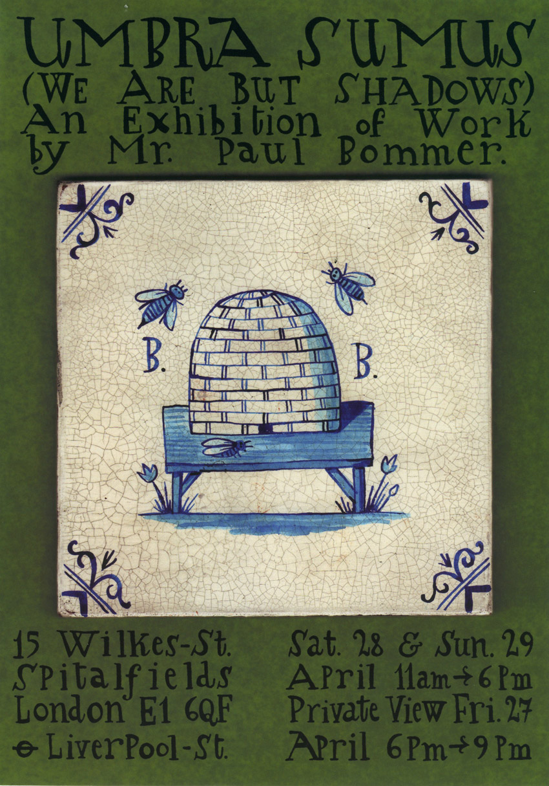

Sunday, April the 29th, 2012
back to: title, date or indexes
Just back from seeing a splendid set of Delft tiles on display in a house in Spitalfields. You can see more here.

Hooting Yard on the Air, October the 19th, 2005 : “A Thrilling Yarn” (starts around 30:16)